In this chapter, you will learn more
about frame
structures.
1.1 How can you make a roof withstand the forces acting on
it?
People make and build many different
kinds of things, such as houses, motor cars, roads and dams. We
also make items like bottles, clothes, books and furniture.
Some things, like forks and spoons and knives, are solid objects that consist of
one part only. Other objects, like bottles, pots and water
tanks, are hollow objects that can also be called shells. We also make objects
that consist of different parts that are put together, like
chairs, tables and bridges. These objects are called
frame structures and
it is important to try to make frame structures strong.
Learn about roofs
Fold a sheet of cardboard in the
middle so that it looks like the roof of the house in Figure
4.
Use your hand to
press down on the cardboard roof. What happens?
Your house's roof
plates may be very strong and will not bend. But what will
happen when a couple of big men sit on the roof to fasten the
roof sheets?
One way to make a roof stronger is
to use more and thicker materials. However, this is not always
a good plan since it will cost a lot more money. It can also
make the roof so heavy that the walls of the building are not
strong enough to carry it.
A few ways to strengthen a
cardboard roof model are shown in the sketches below.
Look
carefully at each of the sketches. Then write a sentence for
each sketch to describe the method to strengthen the roof by
bracing it.
The word "brace" comes from
the French word "bras", which means "arm". When you brace a
structure, you put in something like an extra arm to make it
stronger.
Case A:
Case B:
Case C:
Many roofs are
supported by frame structures called trusses. Trusses can be made of wood
or steel. The different parts of a truss are called
members. Each truss has a vertical member in the middle. This is called
a king post.
In some
truss designs, there are more vertical members. You can see
more roof truss designs on the first pages of this chapter.
Roof trusses have to support the weight
of the roof materials, such as roof sheets.
What part of the roof trusses shown here will prevent them
from tearing apart when the roof sheets are loaded onto them?
Mark this part on one of the roof trusses on Figure 8.
The
horizontal member at the bottom of a truss prevents the two
sides from ripping apart. Instead of a plank, a rope or a wire
can be used to tie the bottom ends of the two sides together.
When a plank or piece of steel is used for this purpose, it is
called a tie beam.
A tie beam has to be strong enough so
that it will not rip apart by the forces acting on it. The
weight of the roof plates pressing down on the trusses can
cause the ends of the trusses to pull apart.
You can say
that there is tension in the tie
beam, just like there is tension in a rope you pull.
Forces that
cause tension are called tensile
forces.
1.2 More types of forces
Making a roof even
stronger
The two sloping members on the
sides of horizontal beam in Figure 10 are called rafters.
Write the
name of each of the four members next to the member on the
diagram in Figure 10. This is called adding labels to the diagram.
The rafters may bend when the wind
blows against the roof, or when a heavy load is placed on the
roof.
What can you do to strengthen the trusses so that the rafters will not bend when a heavy load is acting on them? Make a
sketch here to show your plan.
The trusses
on the right have struts to
support the rafters.
The two photographs below demonstrate
the kind of force that acts on roof struts. When a force acts
like this, it is called a compressive
force.
A force that is able to stretch or pull something
apart is called a tensile force.
A force that is able to compress or squash
something is called a compressive force.
Torsion and shear force
Roll a sheet of paper into a tube and twist it like the person in the photograph is twisting the towel. By doing this you apply a torsion force on the paper tube.
Press your two hands together tightly as shown in this
photograph. Then rub them against each other.
If you put a piece of clay between
your hands while you do this, the shape of the clay will
change. The force applied by your rubbing hands is called
shear force.
Figure 17
shows two pieces of wood joined with a bolt. If the two pieces
of wood are pulled apart or pushed together, a shear force will
act on the bolt. This can cause the bolt to bend or even to
crack. A thicker bolt will resist a shear force better.
Revise what you have learnt in
Grade 7
In
each case, say which kind of force is demonstrated in the
picture.
Will this roof
structure work well?
Describe what could go
wrong when roof plates or tiles are put on this roof
structure.
Trusses like the ones in the drawings
below are called queen-post
trusses. The two vertical members are called queen-posts. They
are shaded in Figure 20.
Figure 21 is a
drawing of another type of queen-post truss. Shade the
queen-posts on the drawing.
On Figure 22, label
members under compression with a "C" and members under tension
with a "T". Do this for all the members except for the
rafters.
1.3 Electricity pylons
Different designs of
electricity pylons
Look at the
pictures below and on the next two pages. What purposes do
these structures serve? Why do we built them?
Why do you think the pylon in Figure 24 is designed the way it
is, and not in the way shown in Figure 25?
The pylons in Figures 26 and
28 are solid structures made from concrete. All the other
pylons are steel frame structures.
What do you think
is indicated by the green parts of these drawings?
Making a structure rigid using only a little material
Forces that act on a rectangular frame
can make it skew:
You can also use the word
skew as a verb:
You can say the "forces skew the frame".
Or you can say that the "forces
are skewing the frame".
What happens to the
lengths of the lines AC and BD when the frame skews? Go measure
it and find out!
To prevent a frame from skewing, a
support can be inserted to triangulate it:
A support inserted to
triangulate a frame can also be called a brace.
Compare what
happens when you apply forces as in case A and case B.
Why does the
frame keep its shape in case A but changes shape in case B?
Hint: Think about the type of forces acting on the blue
beam.
How can
you improve the design of the frame
so that forces cannot make it skew?
Another way to prevent a frame from
skewing is to triangulate it twice, to make a cross. One brace
goes from the top left to the bottom right of the rectangle.
The other brace goes from the top right to the bottom left of
the rectangle.
This is called cross-bracing. It is a special
kind of triangulation. With cross-bracing, the frame does not
skew when forces are applied as in case A or case B.
Compare the frame
design in Figure 31 with the one in Figure 32.
Can you use
steel cables instead of beams for the braces in both of these
frame designs? Explain your answer.
If you use
steel beams as braces for both frame designs, do you have to
use the same thickness beams in both designs? Or can you save
material and use thinner braces in one of the designs?
How to make a tower resist
twisting
The structure of a tower should resist
changing shape. Two different ways of changing shape are shown
below.
Using triangulation or cross-bracing on
the outside of a frame helps the frame to resist skewing. But
it does not prevent it from twisting, as shown in Figure
34.
Twisting happens when torsion forces
act on a structure, as shown by the red arrows in Figure 34. To
prevent a tower structure from twisting, you can use
cross-bracing inside
the frame structure. The photos below show how a frame
structure can be built with cross-bracing on the inside and on
the outside. The cross-bracing on the inside is in red, and the
cross-bracing on the outside is in dark blue.
Chapter 2
Buildings and bridges
In this chapter, you will learn about
bridges and other structures that span over spaces. You will
learn about different types of bridges, and different ways of
making bridges stable and strong.
You will need corrugated cardboard
and a pair of scissors to do the work in this chapter. You will
also need some sticky tape.
Figure 1: How can
the builders lay bricks over the window?
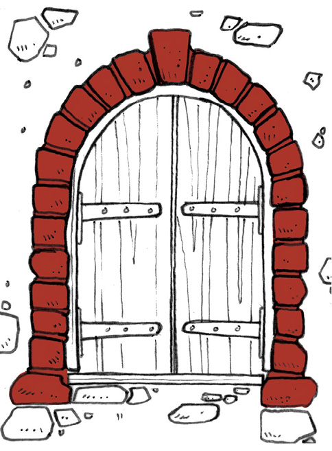
Figure 2:
Different ways of supporting the wall above a window or a
door.
Figure 3: What is this structure for? How
is it supported?
2.1 Windows and tables
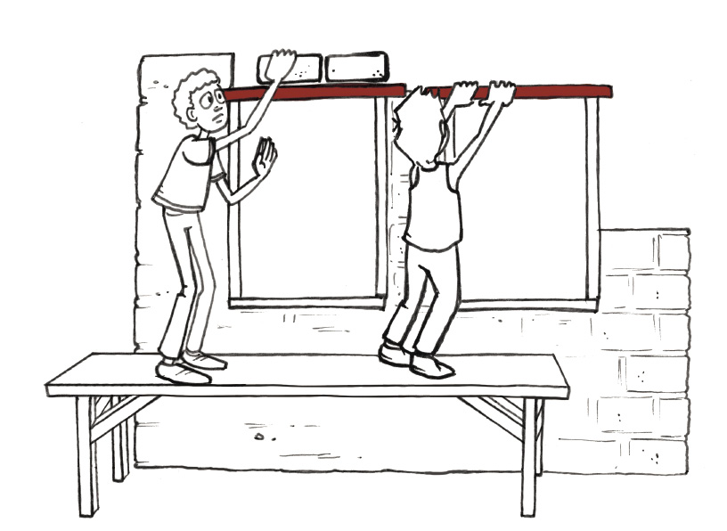
Figure 4
In the picture above one man is laying
bricks above a window, but the window has not been built in
yet. What keeps the bricks from falling down?
The other man is inserting a
lintel across the
window opening. A lintel is a piece of wood, steel or concrete
that can support the wall above a window.
Lintels and
objects like thosein Figure
5 are called beams.
Figure 5
Build a model table
Valencia is in a hurry and needs a few
extra tables for a wedding function at her house. She cannot
afford to buy real tables, but she has many wide sheets of wood
that can be used for tabletops.
Figure 6
How
can you use the sheet of wood to make tables, without having to
cut the wood? Make a rough sketch of your plan below.
Jaamiah has a
plan. She cannot describe the plan in detail, but she made this
drawing to show how her plan will work.
Figure 7
Valencia does not really understand Jaamiah's drawing. Make a
better drawing that will show more clearly what Jaamiah's
tables will look like. You only need to make a quick freehand
sketch to show what the table will look like.
To understand how Jaamiah's table will
work and to test if it will work well, you can build a small
model of the table. Use corrugated cardboard to do this.
You will need three pieces of
corrugated cardboard, each about 20 cm long and 10 cm wide.
Decide how you will cut the pieces for the tabletop and the two
supports. You can cut them with the corrugations along the
width, as shown in Figure 8, or with the corrugations along the
length, as shown in Figure 9.
Figure 8: Corrugations along the
width
Figure 9: Corrugations along the
length
Build your
model table and test it to see if it will work well.
How should the
corrugated cardboard be cut tomake the strongest top for your
table: with thecorrugations along the width or along the
length?
Figure
10
Show on the
drawing in Figure 11 in which direction the corrugations should
go to makethe strongest supports for your table.
Figure 11
Now think of
ways to make the table stronger so that it can support bigger
loads. The table in Figure 12 is not strong enough to support
its load without bending.
Figure 12
Suppose you
have another sheet of corrugated cardboard with which you can
make the table stronger. You can add the sheet as a second
table top, as shown in Figure 13. Or you can cut the extra
sheet in two pieces and make another A-frame support for the
middle of the table, as shown in Figure 14.
Which way of using the extra sheet will help the most to make
the table stronger: the way shown in Figure 13, or the way
shown in Figure 14?
Figure 13
Figure 14
2.2 Different types of bridges
Figure 15
Investigate bridges
Look at Figure 15. A bridge needs to be
built so that people can cross a river. The distance from point
A to point B above is about 30 metres.
Make a drawing on
Figure 15 to show what the bridge could look like.
Look at your
drawing. In what way will the bridge be supported so that it
will not bend when a heavy truck passes over it?
What materials do
you think should be used to make the bridge?
How wide should the
bridge be?
How many cars can
be on the bridge at the same time?
A beam-and-column bridge
An arch bridge
A truss bridge
A suspension bridge
A cantilever bridge
A cable-stay bridge of the fan
type
A cable-stay bridge of the harp
type
Figure 16: Different types of bridges
You can
easily make a small suspension bridge between two
desks with sticky tape. When you do this, you use the tapes as
cables.
Figure 18
Figure 17
You can put
strips of cardboard across the two cables to form a
deck for the
bridge.
Do you think this suspension bridge in Figure 17 will be strong enough to support a small bird walking on it?
You can also easily build a small
cantilever bridge
between two desks. Put two pieces of corrugated cardboard on
the desks, like the blue objects on the drawing below. Put an
object like a book on one end of each cardboard sheet, so that
they will not fall down.
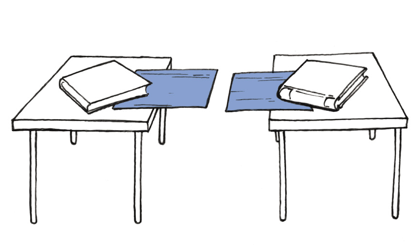
Figure 19
You now almost have a bridge, but there
is still a gap.
How can you
complete the cantilever bridge without moving the cardboard
sheets or the desks closer together?
In a suspension bridge, the cables are
anchored on the two
sides, the same way you pasted your sticky tape strips on two
desktops. In most suspension bridges, the deck hangs from the
cables. We can also say the deck is suspended from the cables.
Figure 20
In a
cable-stayed bridge
the deck is also suspended from the cables, but the cables are
anchored on support columns, not on the two sides of the
bridge. To make a simple model of a cable-stay bridge, you can
paste some pieces of string to a sheet of corrugated
cardboard.
Turn the
cardboard around so that the strings are at the bottom.
Pick up and hold
all the string ends in one hand.
Step A
Step B
Step C
Figure 21
2.3 Making structures strong enough
Investigate what could go
wrong in structures
Do you think
it will work well to use a sheet of window glass for a
tabletop?
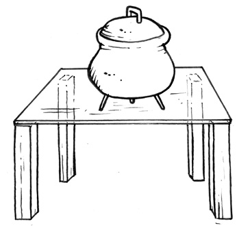
Figure 22: A table with a glass
top
A glass top can easily crack or break,
or fracture, when heavy objects are placed on it. There are
also other things that could go wrong with structures.
What material was
used to make the legs of the chair you are sitting on?
Why will it not
work to use rubber pipes to make the legs of a chair?
Tom made this plan for a model
table with a round top.
His plan is to make three bottles
stand on their small ends, with a round disk of cardboard on
top of them.
Figure 23: A table with a round top
Explain why this
will not work well.
The following
are examples of ways in which structures, like bridges or
buildings, or parts of bridges or buildings, could fail to
work.
Some parts, or members, of the structure can fracture, or break apart.
Some parts, or members, of the structure can bend.
Structures or parts of structures can topple over.
The pictures below show different ways that
bridges can fail. Describe what went wrong in each of the three cases, and how it could be prevented from happening again.
Figure 24
Figure 25
Figure 26
A design for a
small table is shown here.
In what ways could
this table fail to work?
Figure 27
The pictures on the
opposite page show a suspension bridge and an arch bridge.
In a suspension
bridge, the deck of the bridge hangs from the cables that carry
the load. Explain in what way an arch bridge is different from
a suspension bridge.
Figure 28
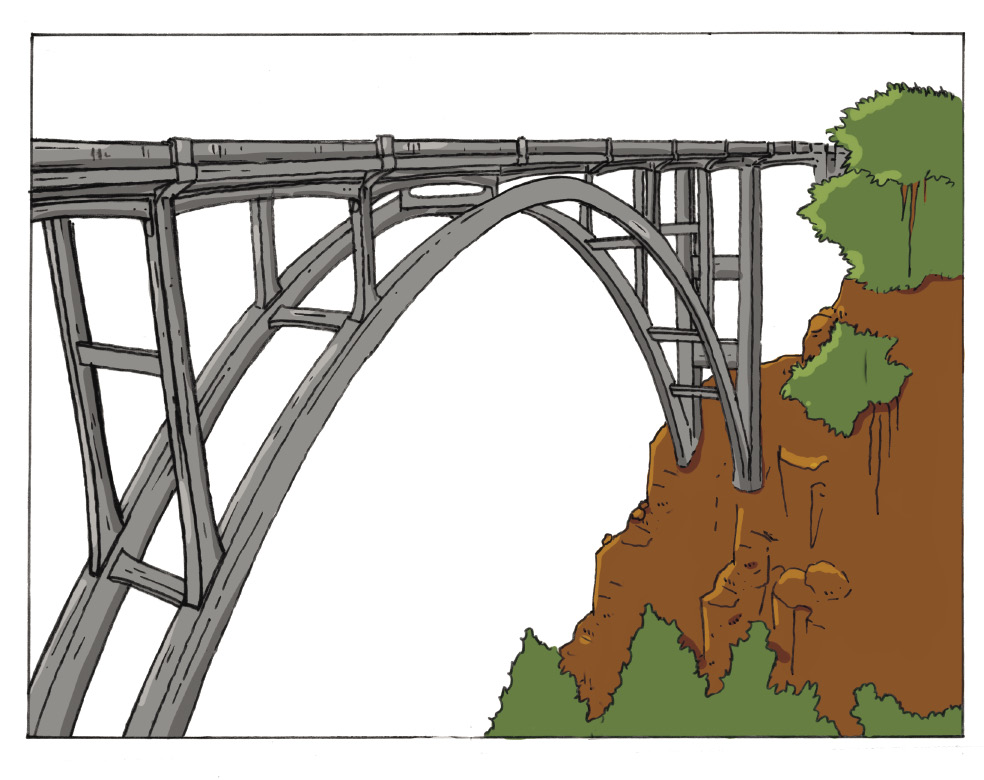
Figure 29
Homework: What have you
learnt?
Where are lintels
used in houses, and what are their purposes?
Can arches be used
instead of lintels when houses are designed and built? Make a
freehand sketch to illustrate your answer.
What is the
difference between a beam-and-column bridge and an arch
bridge?
When will you use
an arch bridge instead of a beam-and-column bridge.
Next week
In the next two chapters, you will make
more sketches and learn new drawing techniques.
Chapter 3
Flat and isometric working drawings
In this chapter you will learn about
an important way to develop and communicate your ideas in
Technology. You will start drawing freehand sketches. Then you
will learn about drawing one face of an object in two
dimensions. Finally, you will learn how to draw an object
showing three dimensions.
3.1 Line types and scale drawing
36
3.2 Single view flat 2D drawing
40
3.3 Isometric drawing 42
Figure 1
Figure 2
Figure
3
3.1 Line types and scale drawing
Even the easiest
of building projects needs to be designed first. To do this,
someone has to be able to draw the structure that is planned.
Very few people are able to make something without having drawn
it first. So let us have a look at the basic principles of
drawing.
Different lines for different purposes
Construction
lines
Construction lines are normally drawn
to begin to make a drawing. They are feint, thin lines that
will later be replaced by the outlines.
Example:
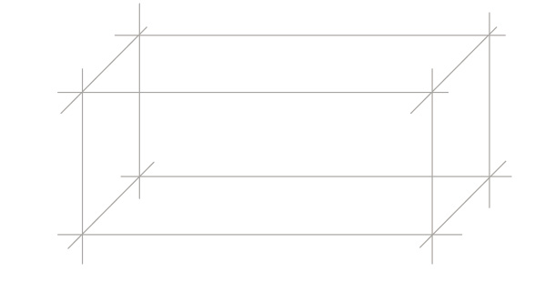Figure 4
Outlines
1. These lines are
also referred to as solid lines. They are slightly thicker and
darker than construction lines.
Example:
Figure 5
Hidden
detail
These lines are also known as hidden
lines. These are lines you can't see when looking at the
object. They are the same thickness as outlines but are
broken.
Figure 6
Centre lines
These lines show where the centre of a
symmetrical object is, for example a circle. These lines are
also called chain dash-dot
lines.
When you need
to drill a hole in an object, a centre line is useful because
it shows you exactly where you should put the tip of the
drill.
Figure 7
Figure 8
The symbol  is used
to indicate the diameter of a circle. The diameter is written
at the end of an arrow that points to the centre of the
circle.
Drawing to scale
It is not always possible to draw
something according to its actual size in real life, because
you might not be able to fit it onto the paper you use. So you
need to be able draw something to a different scale. But how does this
work?
•Scale 1:1 This is
full scale and means that a centimetre in your drawing shows
a centimetre in real life.
•Scale 1:2 This
means that a centimetre in your drawing shows two centimetres
in real life.
The drawing below shows the same
object drawn to different scales.Measure the bottom line on the
first and second drawings, to check that the second drawing is
really to a scale 1:2.
Figure 9
Look at the drawing of anobject on the
right.
Figure 10
Scale 1:10
1.
Redraw this object to a scale of 1:5. Use a ruler to make this
drawing and all the other drawings in this chapter. Use a
compass to draw the circle.
• Show
dimensions.
• Show the
centre lines of the circle.
• Show the
scale.
3.2 Single view flat 2D drawing
In the
drawings that you made in the previous lesson, you showed the
front, the side and the top of objects. Now you will make some
drawings where you only show the front of an object. The front
of the block in Figure 11 is red.
1.
The lady only sees the red part of the block. Make a sketch of
the red part on the grid below.
Figure 11
2. Make a 1:10 scale
drawing of the front part of this object.
• Show
hidden lines.
• Show
dimensions.
• Show the
scale.
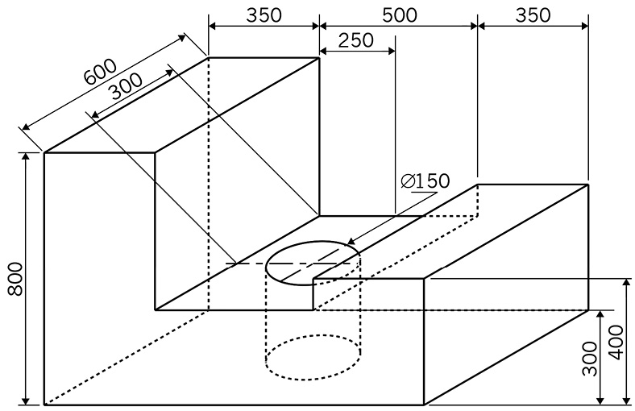
Figure 12
If you have
time left at the end of this lesson, start reading about
isometric drawing on the next page.
3.3 Isometric drawing
The differences between a 3D oblique
drawing and an isometric drawing are demonstrated in the
examples below. Both drawings are of the same object.
Figure 13: Oblique view
Figure 14: Isometric drawing
The oblique drawing shows the true
lengths of lines BC and CD, but not the true length of AB.
The isometric drawing shows the
true lengths of the lines AB, BC and CD.
The word "isometric" comes
from the words "iso" and "metric".
"Iso" means "the same", and
"metric" means "measurement".
1. Make
an isometricdrawing of the chalkbox on the right onthe
isometric grid.Use a scale of 1:2.
• Show
hidden lines.
• Show
dimensions.
• Show the
scale.
2. Make an isometric
drawingof the piano on the right onthe isometric grid. Use
ascale of 1:25.
• Show
hidden lines.
• Show
dimensions.
• Show the
scale.
Figure 16
Scale 1:25
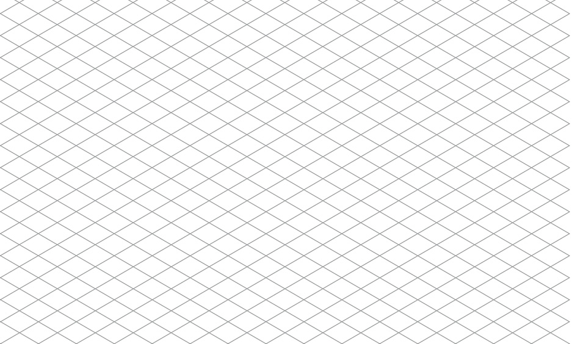
Next week
In the next chapter, you will learn to
make drawings that show what you really see. Those drawings are
artistic drawings, and they use some special techniques that
you will learn.
4.1 Double vanishing point drawing
47
4.2 A more difficult double vanishing
point perspective drawing 50
4.3 Make drawings look more realistic
using shading and texture 52
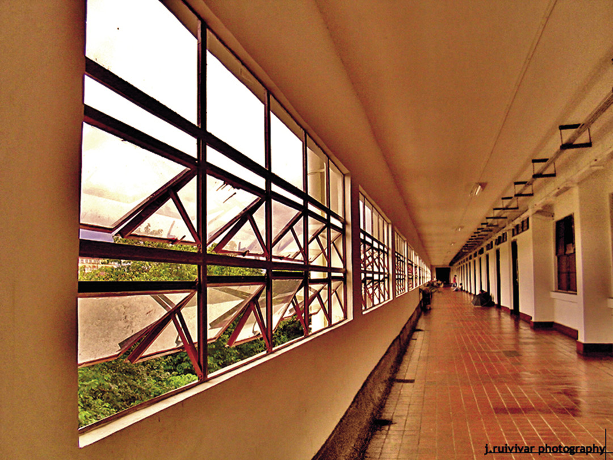
Figure 1: Everything we see around us is
in perspective.
Figure 2: Where are
the vanishing points for each box?
4.1 Double vanishing point perspective drawing
You were introduced to single vanishing
point perspective in Grade 7. You will now go a bit further and
look at double vanishing point perspective. Perspective views
are often used by artists to sketch an object to try to
represent what the human eye really sees.
If you stand looking out over the
ocean, a big dam or a flat land area, you will see a horizontal
line where the sky and water or land meet. This is known as the
horizon.
To make a perspective drawing, you
need to think of where the horizon line could be on your
drawing.
In Grade 7 you
learnt how to draw a box in single vanishing point perspective,
as shown by the drawing below.
Construction lines, also known as the
visual rays
Front View
Vanishing
Point
Horizon Line
(HL)
Ground Plane
Figure 3
Two-point perspective
In a double
vanishing point perspective drawing there are two
vanishing points on the horizon line. On page 46 there is a
double vanishing point perspective drawing of a
box.
1. (a)
To make a double vanishing point perspective drawing of a
box, you can start bydrawing a horizon line and one
vertical edge of the box as shown below.
(b) Then draw
construction lines from the top and bottom of the vertical edge
to two vanishing points on the horizon line.
Vanishing Point 1
Vanishing Point 2
Ground Plane
Figure 4
2. (a) Once you have
done this, you have to mark off another edge of the block on
the construction lines as indicated in Figure 5 at A and B.
(b)
From points A and B, draw construction lines to vanishing point
2.
Vanishing Point 1
A
B
(HL)
Vanishing Point 2
Ground Plane
Figure 5
3. (a) Now mark off
another edge of the block on the construction lines going to
vanishing point 2 at C and D as in Figure 6.
(b) Draw
construction lines from points C and D to vanishing point
1.
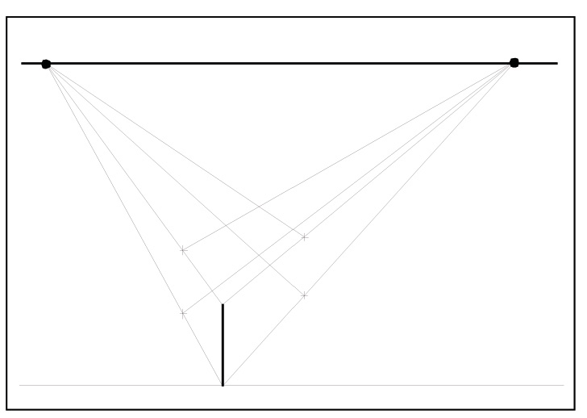
Vanishing Point
1
B
A
(HL)
D
C
Vanishing Point
2
Ground Plane
Figure 6
4. Make
your own double vanishing point perspective drawing of a block
below. Draw in your solid lines, as indicated on the block
drawing on page 46.
4.2 A more difficult double vanishing point perspective
drawing
You will now make a double vanishing
point perspective drawing of a block with a piece that is cut
out, as shown in Figure 7.
Figure 7
1. It is
best to draw the block first, without the cut-out, as shown
below.
Figure 8
2. Then
mark the cut-out, as shown below.
Figure 9
3. Make
and complete your own double vanishing point perspective
drawing of the object in Figure 7. Draw in solid lines where
necessary.
4.3 Make drawings look more realistic using shading and
texture
When you draw a picture of an object,
you can use perspective to make the picture
look more life-like or real.
When you've drawn your object in
perspective, you can make it look even better by using
shading. Shading is
a way of showing that something is a three-dimensional shape, instead
of a two-dimensional
shape.
Compare Figures 10a and 10b, as an
example.
Figure 10a: a
circle (two-dimensional) Figure 10b: a sphere
(three-dimensional)
The basic principle of shading is
light and shadow, as you can see in Figure 11. The position of
a light source relative to an object determines which parts of
an object are lighter and which parts darker.
Figure 11: The
position of light shining on the cube determines which parts
will be darker or lighter. The position of the light on these
cubes is shown by the red arrows.
There are a number of techniques that
you can use to shade an object, regardless of the drawing tool
you are using, such as a pen, pencil, coloured pencil, crayon,
charcoal, brush or ink.
Hatching
Hatching means that you draw
more-or-less parallel lines on the part of the object you want
to be in shadow. The closer your lines are together, the darker
you can make the shadow. Hatching works well with any drawing
tool that can make lines.
Figure 12: Different shades created by
hatching
Cross-hatching
Cross-hatching is like hatching, except
that you draw 2 sets of lines, crossing each other.
Cross-hatching also works well with any drawing tool that can
make lines.
Figure 13:
Different shades created by cross-hatching
Dots
Instead of
drawing lines, you can use your pen, pencil or any other
drawing tool to make dots for shading. The closer the
dots are together, the darker the shade will be.
Figure 14:
Different shades created by dots
Ink washes
You can dilute ink with water to create
different shades. A lot of water and a bit of ink will make a
lighter shade and a lot of ink with a bit of water will make a
darker shade. Once you've mixed the ink and water, use a brush
to apply the ink. If you don't have ink, you can use
watercolour paint in the same way.
Figure 15: Different shades created by
an ink wash and a brush
Here are examples of basic forms that
have been shaded using these different techniques:
Figure 16: A sphere
Figure 17: A cube
Figure 18: A cylinder
Figure 19: A
cone
Below is a much more complex shape that
has been drawn by an artist using a combination of shading
techniques:
Figure 20: Portrait
of a man in a suit
Drawing exercises
1.
Create 5 different shades in the block below using one of the
shading techniques you've learnt about.
2.
Figure 21 is a drawing that consists of lines and shading. It
shows a tree, a house and a car, drawn by combining different
basic shapes
Shade the copy of this drawing below. You can use any of the
shading techniques you've learnt about in this chapter.
Figure 21
Next week
In the next three chapters, you will
learn about different ways to change the way that things move,
for example using gears and cranks.
In this chapter you will learn how
wedges, inclined planes, wheels and gears can change the
direction and size of a force. These things are all called
simple mechanisms. Different simple mechanisms can be used in
combination with one another to create more complicated
machines, like bicycles or cars.
5.1 Inclined planes and wedges 59
5.2 Wheels 62
5.3 Gears 65
gear with 24 teeth
gear with 32 teeth
moderate incline
gear with 32 teeth
gear with 22 teeth
steep incline
Figure 1: You use different
combinations of gears on a bicycle when you cycle up a moderate
slope or a steep slope. Why?
Words to talk
about hills and roads going upwards
When a road is flat, you say that it
is level.
When a road goes up or down, you say
that it has a slope,
a gradient, or an
incline.
When a road goes slightly upwards,
you say it has a gentle incline.
When a road rises more quickly, you
say that it has a moderate incline.
When a road
rises up sharply, you say that it has a steep incline.
5.1 Inclined planes and wedges
Revision: Mechanical advantage
In Grade 7 you learnt how levers,
pulleys and cranks can help you to move things. To get an
object to move, you need to push it or pull it. A push or pull
is called a force. That force will make the object move over a
distance. Force and distance are the two important things that
are changed by a mechanism.
Levers, pulleys and cranks
are different types of mechanisms. In this chapter,
you will learn about more types of mechanisms.
Some mechanisms change a small
input force over a large distance into a large output force
over a small distance. You can say that the mechanisms have a
mechanical
advantage, but a distance disadvantage. You get a
mechanical advantage when a machine makes it easier to lift or
move something.
Figure 3: A pair of pliers that give
a mechanical advantage.
Other mechanisms change a large
input force over a small distance, into a small output force
over a large distance. You can say that the mechanisms have a
mechanical
disadvantage, but a distance advantage. You get a
distance advantage when a machine makes something move
further.
Figure 4: A pair of kitchen tongs
that give a distance advantage.
Whenever you look to see how a
mechanism works, try to understand what is happening to the
input force and the output force. Also try to understand what
is happening to the input distance and the output distance. A
distance advantage is often also a speed advantage, because if
something moves further in the same time, it also moves
faster.
Inclined planes
A road that goes up steeply can be
called an inclined
plane. The roof of a house that goes up at an angle is
also an inclined plane.
Helping a boy in a wheelchair
to get up a step
When people
design buildings with steps, they also have to think about old
people or people in wheelchairs. These people will struggle to
get up steps, like the boy in the wheelchair in Figure 5.
Figure 5
To help the boy, you can build a
ramp to make a smooth path between the low place on the ground
and the higher place. Two different designs of a ramp are shown
below.
A ramp is also an
inclined
plane.
Figure 6
ramp A
ramp B
Figure 7
1. Which design will
be the easiest for the boy to get from the ground to the higher
place, and why? Hint: read the part on "Words to talk about
hills and roads going upwards" at the bottom of page 57.
2. Will the boy travel
the same distance up both ramps A and B, or will he travel a
longer distance on one of the ramps? If yes, which one?
3. Will the force with
which the boy has to turn the wheels be the same on both ramps,
or will it be greater on one of the ramps? If yes, which
one?
4. Use the following
words to write a few sentences to explain why it is easier for
the boy to go up the one ramp than the other: input force,
output force, input distance, and output distance.
5. Which ramp gives
the boy the greatest mechanical advantage?
Wedges
Axes and knives are wedges. Wedges
change a small input force into a larger output force. They use
a large input distance to give a small output distance.
Why does an axe make it easier
to split wood?
output force
input force
input distance
output distance
Figure 8: The wedge shape of the head
of an axe makes it easier to cut wood.
When you cut wood with a wedge-shaped
axe, a large input distance downwards causes a small output
distance sideways.
1. Is the input
force greater or smaller than the output force? Or are they the
same?
2. Does an axe give a
mechanical advantage or a distance advantage?
The drawing
on the right shows how wedges can be used to make a house
level. If a house is
not level, and you put a ball on the floor, the ball will roll
to the lowest side or corner of the house.
Figure 9: Wedges
can be used to lift upvery heavy objects, even houses!
5.2 Wheels
What is special about wheels? They
can roll over a surface to cover a distance, just like a ball.
When a wheel on the ground turns, it moves forward in a
specific direction. So a wheel changes a turning or
rotational movement
into a straight or linear
movement.
The words "roll" and
"rotate" both come from the same old Latin word "rota".
"Rotational movement" means a rolling or circular
movement.
The word "linear" comes from
the word "line". "Linear movement" means movement in a
straight line.
Without wheels, the only way to
move objects over the ground or another surface would be to
drag them across the surface. Perhaps you have moved a heavy
cupboard or even a fridge or a stove over a floor. It is hard
work! But if there were wheels underneath the heavy object, it
would be much easier to move it, because the friction would be less.
Friction is the resistance
force that makes it hard to slide something along a
surface.
Figure 10 Figure 11
Imagine you are
moving a heavy cupboard. Fortunately, the cupboard stands on
wheels, like a shopping trolley. When you push the cupboard,
the wheels turn and the cupboard moves forward. So your linear
pushing movement is changed into the rotational movement of the
wheels, which is changed into the linear movement of the
cupboard. This is why you say that a wheel is a mechanism that
changes the direction of movement. It changes the movement from
linear movement, to rotational movement, and back into linear
movement.
The wheels under the cupboard were
freely turning, like the front wheel of a bicycle. You call
that a free-running
wheel.
The back wheel of a bicycle does not
turn freely. It turns because the chain is pulling the gear on
the back wheel to turn. You call that a driven wheel.
Figure 12: The back
wheel of a bicycle is driven by the gear and chain
mechanism
A wheel that is driven gives a
distance advantage. The drawings on the right and below use a
bicycle as an example to explain this.
The chain goes around a gear on
the back wheel. That gear has a circumference of 30 cm. So if
the chain pulls forward by 30 cm, then the gear will rotate
once.
• When the
gear rotates once, the wheel rotates once.
• The wheel
has a circumference of 207 cm. If the wheel rotates once, the
bicycles moves forward by 207 cm.
•
Therefore, when you pull the chain forward by30 cm, the
bicycle moves forward by 207 cm. That is why a driven wheel
gives a distance advantage.
Figure 13: A wheel
gives a distance advantage
For a wheel to turn, it has to turn
around something that is at the centre of it. This is called
the axle. An axle is
for a wheel what a pivot or fulcrum is for a lever.
The inside of the wheel rubs on the
axle, so there is some friction that tries to stop the wheel
from turning. This friction is very small because:
• The
distance moved at the outside of the wheel is greater than
the distance moved at the axle. You can see this on Figure
14, where the distance moved at the outside of the wheel is
shown in blue, and the distance moved at the axle is shown in
red. For the same forwards movement, a bigger wheel will give
a smaller movement at the axle. Therefore big wheels give
less rubbing or friction at the axle.
• Most
wheels have a very smooth oiled surface or bearings between
the axle and the wheel, to reduce the friction even more.
Figure 14
Group discussion
Work in groups of three or four. Write
down your answers.
1. Why are some wheels
small and others big?
Hint: think of the
advantages and disadvantages of small wheels and of big wheels.
Also think of the weight and cost of the wheels.
2. A motor car, a 4
\times 4 bakkie, a shopping trolley, and a skateboard each have
four wheels. For each one of these examples, which wheels are
driven and which are free-running?
5.3 Gears
Things can turn in two
directions
The diagram below shows two levers that
are mounted on vertical supports. The levers can turn around
axles that are shown with round black dots.
Figure 15
1. If you push the
black end of the lever on the left down,
(a) in what
direction will the red end of the lever move, and
(b) in what
direction will the blue end of the lever on the right move?
2. If you push
the black end of the leveron the left down, will the leverturn
clockwise like this,
or anti-clockwise like this?
Figure 16: To talk about the
direction that something moves over a distance, you use the
words forwards, backwards, left, right, up and down. But
what if something does not move to anywhere else, but turns
while it stays in the same position? Then you talk about
something turning like the hands or arrows of a clock.
3. If you turn the
lever on the left anti-clockwise, in which direction will the
lever on the right turn?
Gears are very similar to levers. Look
at the drawings below.
A
B
C
Figure 17: You can think of a gear as
if it is made up of many levers.
Imagine you attach many levers to a
round disc as in drawing A. If you then add material to make
the ends of the levers into the shapes of gear teeth, you will
have a gear, as shown by drawing B.
The type of gear shown in drawing C
is called a spur
gear. In Term 3 of this year and in Grade 9 you will
learn about other types of gears.
4. The red gear below
is turned anti-clockwise, until the tooth with the black dot
reaches the arrow.
(a) Draw another
arrow to show where the tooth with the blue dot will be when
the black dot reaches the arrow.
(b) Draw a small
cross to show where the red dot will be when the black dot
reaches the arrow.
Figure 18
(c) In what
direction will the yellow gear turn, when the red gear is
turned anti-clockwise?
5.
(a) In what direction must the small gear on the right be
turned so that the blue dot will move downwards when you start
to turn?
(b)
If the small gear is turned clockwise until the red dot is back
at the yellow arrow again, where will the blue dot on the big
gear be? Make an arrow on the sketch to show where it will
be.
Figure 19
(c) If you turn the
small gear by hand, will the big gear turn faster or slower
than the small gear? Explain your answer.
•
•
6. If you want the
driver gear and the driven gear to turn in the same direction
the two gears will not work. Can you make another plan?
Idler gears
The drawing below shows a set of three
gears. The gear in the middle is called an idler gear. Its purpose is to
make the driven gear turn in the same direction than the driver
gear.
Figure 20: In a
three gear set the input and output gears turn in the same
direction.
1. Look at the system
of gears in Figure 21. If the gear on the left is the driver
gear, will the driven gear turn faster or slower than the
driver, or will it turn at the same speed?
driver gear
driven gear
Figure 21
When an idler gear is smaller than the
other gears, as for example in Figure 21, then it is made of
harder material than the other gears. This is because the idler
gear will rotate more times than the other gears. Every time a
gear turns the metal rubs against the metal of the other gears,
and a little bit of the metal rubs away. Have a look at the
soles of your shoes. The same thing happens to them.
Gear ratios
1.
Look at the gears on the right. The big gear is the input gear,
and the small gear is the output gear.
Each gear is fixed to an axle, and the axle drives a fan. The
speed with which the fan turns is called the rotational speed of the
axle.
(a)
Will the fan on the big gear rotate faster or slower than the
fan on the small gear, or will it rotate equally fast?
Figure 22
(b) Will the force
with which you turn the axle of the big input gear be smaller
or bigger than the turning force on the axle of the small
output gear?
A gear system can change a fast
rotational speedinto a slower one, or a slow rotational speed
intoa faster one. The gear ratio is equal to the speedof
rotation of the input gear divided by the speedof rotation of
the output gear.
Gear ratio and speed ratio is the same thing.
It can also be called "velocity ratio".
The speed of rotation of each gear is
"inversely proportional" to the number of teeth of the gear.
Therefore the gear ratio can be calculated by dividing the
number of teeth on the output gear by the number of teeth on
the input gear.
In Figure 22 the big input gear has
40 teeth and the output gear has 20 teeth. So this gear system
has a gear ratio of
20 \div 40 = ½. You can also write it as the ratio
1:2. It means that the input gear turns at half the speed of
the output gear.
A gear
system also changes the turning force on the input axle into a
different turning force on the output axle. If the rotational
speed of the output axle is faster, the turning force on the
output axle will be smaller.
For the gear
system in Figure 22, the output axle exerts half the turning
force of the input axle.
Turning force is also called
torque.
gear ratio =
rotational
speed of input axle
rotational
speed of output axle
=
turning force
on output axle
turning force
on input axle
=
number of teeth
on output gear
number of teeth
on input gear
Sometimes gears do not touch each
other, but are rather connected by a chain, as on a bicycle.
But the gear ratios still work in the same way.
On the left in Figure 23 are all the
different gear choices at the front of a bicycle, between the
pedals. On the right of Figure 23 are all the different gear
choices at the back of this bicycle, on the back wheel. The
number of teeth of each gear is written inside the gear.
front
back
Figure 23: Gear choices on a
bicycle
2. (a) What is the
biggest gear ratio that you can choose on this bicycle? Choose
the front and the back gears that you will use, and then
calculate the gear ratio.
(b) What
combination of the front gear and the back gear will you choose
to a go up a very steep hill?
In the previous chapter you learnt
how mechanisms such as wedges, inclined planes, wheels and
gears can change the direction, the distance and the force of a
movement. For wedges and inclined plains, the movement was in
straight lines. For wheels and gears, the movement was in
circles, in other words, rotational movement.
In this chapter you will learn
about another type of movement, that is in a straight line, but
does not keep moving forward on that line. Instead, the
movement is backwards and forwards or up and down along the
line. When you cut bread with a knife, or you cut wood with a
saw, you make such a movement. This type of movement is called
reciprocating
movement.
The word "reciprocate" comes
from the old Latin words "re" and "pro". "Re" means back and
"pro" means forward.
You will learn about mechanisms that
change rotational movement into reciprocating movement, or
reciprocating movement into rotational movement.
6.1 The crank-and-slider mechanism
74
6.2 The cam-and-follower mechanism
77
6.3 A car engine: using a crankshaft
and a camshaft 81
Figure 1: When you saw wood you make
a reciprocating movement.
Figure 2: A wind pump converts a
rotating movement into a reciprocating movement.
Figure 3: A steam driven locomotive
uses a crank-and-slider mechanism to turn the
wheels.
6.1 The crank-and-slider mechanism
Revision: A crank-and-spool mechanism
You learnt about
cranks in Term 3 of Grade 7. There a crank was used to turn a
wheel called a spool on which rope was rolled up. The crank was
part of a bigger mechanism that is called a crank-and-spool
mechanism or a winch. The crank can be turned one way to pull
in the rope, and the other way to let it out.
•
Some winches
also use gears to give an even bigger mechanical advantage.
Figure 4: A simple hand-powered winch
used to lift a bucket of water
Changing rotational movement into
reciprocal movement
To change rotational movement into
reciprocal movement, a crank is used in a different way, as
shown by the pictures on the next page. A slider is attached to the crank
by a connecting rod.
The slider is normally round, and fits into a round hole. It
can only move sideways, not up or down.
There is a pivot between the crank and the
connecting rod, and another pivot between the connecting rod
and the slider. Both pivots change position when the mechanism
is working. The crank turns around an axle. The axle never changes
position, it just turns.
The crank can
be fixed to a wheel,
to make the wheel turn with it. Or the crank can be part of the
wheel.
•
The longer the
crank throw is, the greater the mechanical advantage of the
crank will be. The shape of the crank does not matter.
axle
crank throw
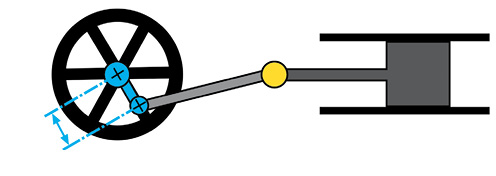
connecting rod
pivots
slider
Figure 5: The different parts of a
crank-and-slidermechanism
Thinking about the
pictures
The different steps in the operation of
acrank-and-slider mechanism areshown in the pictures on the
right, in Figure 6.
1.
How long is the crank throw in the mechanism in Figure 6?
2.
How far is the movement of the slider from the furthest
position on the left to the furthest position on the right?
This can be called the "total sideways movement".
3.
If the crank throw was twice as long, how long would the total
sideways movement of the slider be?
4.
Will the slider ever stand still while the crank is
rotating?
Figure 6: Different steps during the
operation of a crank-and-slider mechanism
The crank-and-slider mechanisminside a
steam engine
In a steam
locomotive a coal fire is used to boil water. The water changes
into very hot steam that has a high pressure. Imagine you are
blowing up a balloon. You have to create a high pressure of air
in your mouth to make the balloon bigger. The balloon becomes
bigger because the high pressure air moves the sides of the
balloon outwards. Steam at a high pressure can also move
things.
Figure 7
The pictures
on the right show how the movement created by high pressure
steam is changed into the rotation of a wheel.
The hot
high pressure steam is shown in red. When the steam expands, it
also cools down. The cooler steam is shown in purple, and at
the end it is shown in blue.
In an
engine, the slider is called a piston, and the hole inside
which the piston moves is called the cylinder.
A steam
engine uses valves
to let in the hot steam on the right or the left of the
cylinder. The valves have to open and close at the right times.
Is there some mechanism that can do this? This is what you will
learn about in the next lesson.
hot high pressure steam in
steam expands and cools down
steam expands and cools down
Figure 8: How a steam engine
works
cool low pressure steam out
Look again at
Figures 6 and 8.
•
6.2 The cam-and-follower mechanism
A cam is a wheel that is not
round, or it is a round wheel that turns around an axle that is
not at the centre of the wheel.
A cam is used with a follower. The rotational
movement of the cam is changed into the reciprocating movement
of the follower. The follower is in a sleeve, so that it can move in
one direction only.
A cam is driven by an axle, so that when the axle
rotates, the cam rotates. When the cam rotates, the follower
slides on the cam. The position of the follower depends on the
angle at which the cam is rotated.
Do you remember the
difference between a driven wheel and a free-turning wheel
about which you learnt in the previous chapter?
A cam and follower changes the
rotating movement of the cam into the reciprocating movement of
the follower.
driven axle
follower
sleeve
pear-shaped
cam
snail cam
eccentric cam
Figure 9: The different parts of a
crank-and-slider mechanism, and different shapes of cams
Investigate how a cam can be
used to open and close valves
Figure 10 shows how the rotation of a
cam changes the position of a valve in an engine. The figure
continues on the next page. Study this figure carefully before
you answer the following questions.
Figure 10: The movement of a valve as
a cam rotates
rotation of cam
starting
position
1 eight
of a cam rotation
2 eights
of a cam rotation
3 eights
of a cam rotation
rotation of cam in degrees
0°
45°
90°
135°
distance that valve is open
0
2 mm
1. Complete the table
above to show how far the valve is open at different positions
of the cam in Figure 10. Measure the distance that the valve is
open.
2. Which of the
pictures above show the valve at its highest position?
3. Which picture shows
the valve at its lowest position?
Figure 10 above shows different
positions of a cam and a valve as the cam is rotating. This is
the way that the valves in most engines are opened and closed
at the correct times.
•
4 eights
of a cam rotation
5 eights
of a cam rotation
6 eights
of a cam rotation
7 eights
of a cam rotation
one full
cam rotation
180°
225°
270°
315°
360°
The reciprocating movement
created by a snail cam
1. The drawing
on the right uses red arrows to show the distance between the
centre and the edge of a snail cam at different angles of
rotation. Each arrow is rotated with 45° clockwise
from the previous arrow.
Measure the different arrows, from the shortest to the longest
and fill in your measurements in the table below.
7
8
6
9
5
1
4
2
3
Figure 11: A snail cam
position
1
2
3
4
5
6
7
8
9
length
2. Is there a pattern in the lengths of the arrows? How does
the pattern work?
3. What happens between position 9 and position 1?
Something to read at home: another
type of cam
Some cams are a round
wheel, but they do not rotate around the centre of the
wheel. These cams are called eccentric cams. They are
used on many modern bicycles.
During a bicycle race, the
cyclists sometimes get flat or punctured tyres. They then
have to take the wheel off to remove the tyre before they
can fix the tyre. This takes a lot of time, and they'll
struggle to catch up with the other cyclists again.
Many years ago, engineers
designed a mechanism with which you can quickly take a
wheel off a bicycle, without using any tools. This is
called a "quick release" mechanism.
Today, more expensive
bicycles use quick release mechanisms on their wheels. They
also use a quick release mechanism to make it quick and
easy to change the height of the saddle. The photos below
and on the right show how a quick release mechanism uses an
eccentric cam to lock the saddle at the correct height.
frame
seat post
quick-release mechanism
Figure 12: A
quick-release mechanism is used to clamp theseat post to the
frame of this bicycle.
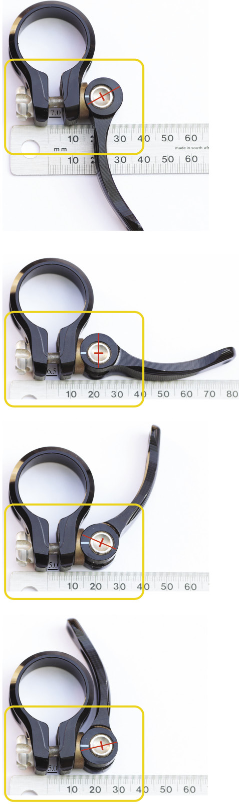
Figure 13: The sides of the quick
release mechanism move or clamp closer together as the
eccentric cam is turned by the handle.
6.3 A car engine: using a crankshaft and a camshaft
The different steps in the rotation of a
four-stroke petrol engine
Figure 14 shows how a one-cylinder
petrol engine works.
Intake stroke: A mixture of air and
petrol gas is sucked into the cylinder when the piston
moves downwards.
outlet valve
closed
inlet valve
open
Compression stroke: The mixture of air
and petrol is compressed when the piston moves upwards.
outlet valve
closed
inlet valve
closed
Combustion stroke: The spark plug
ignites the mixture of air and petrol so that it explodes.
This pushes the piston downwards.
outlet valve
closed
inlet valve
closed
Exhaust stroke: The exhaust gases are
pushed out when the piston moves upwards.
outlet valve
open
inlet valve
closed
Figure 14
In a car
engine, the cams are parts of camshafts that turn as the engine
turns. You do not need to understand everything about the
engine in Figure 14, as long as you can see that it is
important that the inlet and outlet valves open and close at
the correct times.
cam belt
connecting rod
valves
camshafts
piston
cylinder
crankshaft
Figure 15: The
moving parts inside one cylinder of an engine
Draw an engine crankshaft
1. Make a
three-dimensional artistic drawing of the crankshaft of a
one-cylinder engine. Use shading to make it more realistic.
First make a rough drawing, before you make your final neat
drawing.
Hint: Look back at
page 54 to see how you can use shading to make something look
round.
Next week
Next week you will start with a
practical project to design and make a model of a machine that
can crush grain to make flour. This machine will change
rotational movement into reciprocating movement.
Over the next four weeks, you will
design and make a model of a machine that can crush grains like
mielies or wheat to make meal or flour.
Week 1
Compare different designs and make
your own design 88
Week 2
Draw your design and build the model
94
Week 3
Make improvements to the model and
draw an artistic perspective drawing of it 104
Week 4
Present your model and drawings
108
Assessment
Investigate:
Evaluate different designs that other
people made [6]
Design brief, specifications and
constraints [6]
Design:
Design how to make the structure
stronger [8]
Decide what type of mechanism you
will use [4]
Make:
Build the basic structure and the
mechanism in it [12]
Draw your design of parts to add to
the model [12]
Make your improvement to the model
[10]
Draw an artistic drawing in
perspective of your model [12]
[Total marks:
70]
Figure 1: How do mielies become maize
meal?
Figure 2: Before
machines were invented to grind or crush the mielie seeds, it
took a lot of hard work to make maize meal.
Week
1
Compare different designs and make your own design
Evaluate different designs that other
people made(30 minutes)
This is individual work.
The drawings below show rough designs
for grain crushers that other people made. These designs are
not complete, and there could be problems with them. But there
could be useful ideas that you may get from these designs.
design A
design C
lever
design B
pestle
Figure 3: Rough designs made by other
people
Make a list of the advantages and
disadvantages of the different designs. Think about the
following:
• How
strong and stable is the structure?
• What
materials and tools do you need to make the structure?
• How easy
will it be to make the structure?
• How hard
and fast will the pestle hit the floor?
• What is
the mechanical advantage of the lever?
You will be accessed on
the last two rows of the table, on advantages and
disadvantages.
Design
A
Design
B
Design
C
Strength and stability of
structure
Materials and tools needed
How easy to make?
How hard and fast will the
pestle hit the floor?
Mechanical advantage of
lever
Advantages
Disadvantages
Total [6]
Design brief, specifications and
constraints (30 minutes)
Discuss this in teams of three or four. There
should be at least one boy and one girl in each group. Everyone
has to write their own answers below.
1. Write the
design brief. A
design brief tells you what the problem is and who will benefit
from or use the solution. (1)
A machine to crush
grain will usually be powered by an electrical motor that
provides rotational movement. You will not use an electrical
motor in your model, but will rather turn the handle of a crank
by hand. This rotational movement should be changed into a
reciprocating movement so that the grain will be crushed, like
hitting it with a hammer.
The mechanisms that
your model uses should be housed inside a strong and stable
structure.
2. Answer the
following questions to identify the specifications for your
design:
(a) What different
mechanisms could make the grain crusher work? (1)
(b) What forces
should the structure be able to withstand? (1)
3. Identify the
constraints:
(a) How much time do I
have to design and make the model? (1)
(b) What materials
can I find easily to build the model? (1)
(c) What tools do I
already have with which I can make the model? (1)
[Total marks:
6]
Design to make the structure stronger (45
minutes)
Work in your teams again, but make your
own sketches and give your own answers.
You will later be given instructions
on how to build a structure such as the one below. But there
are problems with this structure. It is not stable enough to
withstand forces from the side. It can collapse or topple
over.
Figure 4: A structure for a grain
crusher that is not strong or stable enough to withstand forces
acting on its side.
Design something that you can add to
the structure to prevent it from collapsing or toppling over
sideways. Look at Chapter 1 to help you.
1. Make a rough sketch
below of your plan to strengthen the structure.Each person in
your team should make their own sketch of their own idea.Add
notes and labels to the sketch to explain your design.(4)
2. Compare the rough
designs of everyone in your team. Then decide together on what
design you will use to strengthen the structure. Make a neat
sketch of this design in the space below. Add notes and labels
to the sketch to explain the design. (4)
[Total marks:
8]
Decide what type of mechanism you will use
(15 minutes)
Look at the
old method of crushing grain shown in the drawing on the right.
The hollow vessel holds the grain seeds. The operator drops the
heavy pole into the vessel with a strong and quick movement.
This movement crushes the seeds into smaller pieces.
The
mechanism that you choose should also give a strong and quick
downwards movement of the pestle.
You can
use a crank-and-slider mechanism or one of the shapes of cams
below to change rotational movement into reciprocating
movement. You learnt the names of these shapes of cams in
Chapter 6.
You have
to choose whether a crank-and-slider mechanism or a
cam-and-follower mechanism will work best to crush the grain.
If you choose a cam-and-follower mechanism, you also have to
choose the shape of the cam.
Figure 5
pestle
Figure 6:
Different mechanisms that you can choose from to change
rotational movement into reciprocating movement
1. What mechanism did
you choose, and why?
[Total marks:
4]
Week
2
Draw your design and build the model
Build the basic structure and the
mechanism in it (60 minutes)
First build the structure and mechanism
according to the plans and instructions on the following pages.
Add your own design for how to make the structure stronger
later.
The photo
below shows what the model will looklike before you make your changes.
A-frame
n
ail
follower
support for axle
wire handle and axle
wheel
lever
pestle
Figure 7
In the plans of the model, a wheel is
used instead of a cam or a crank-and-slider mechanism.
Therefore the model will not work. Use a cam or a
crank-and-slider mechanism to make it work.
On the following pages there are
drawings of the different parts that you have to cut out of
corrugated cardboard. Trace the shapes onto cardboard before
you cut them out. Make sure the corrugations are in the correct
direction, as shown by the arrows on the drawings.
Corrugations are like
tunnels between the two outer layers of the cardboard.
Corrugated cardboard is stronger in the one direction than in
the other.
You have to decide for yourself how
many of each part you need to make. You also have to decide
where you will use spacers, and how many to use.
Each member of
the team should build their own model.
Cut out this page to trace the shapes
of the parts onto corrugated cardboard. Put the page back into
your book afterwards.
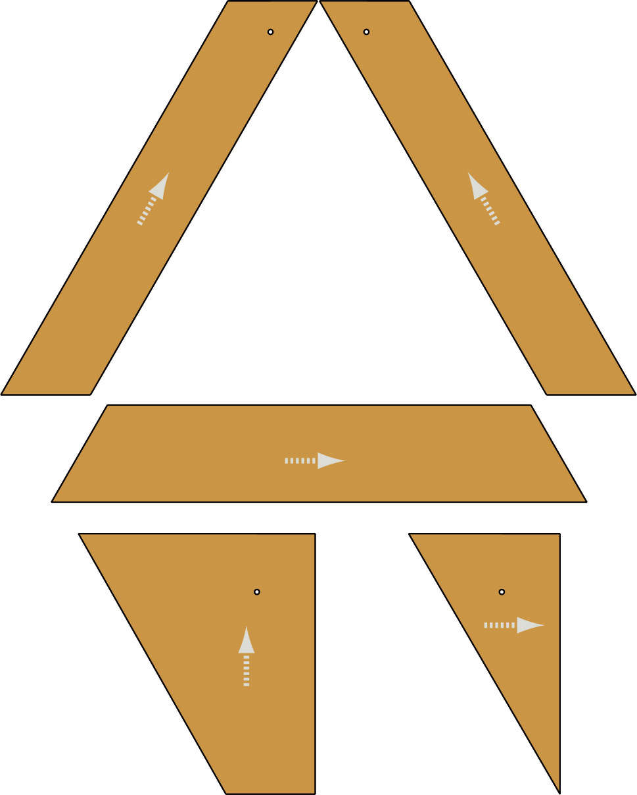Figure 8: The parts of one of the two
A-frames with its support for the axle.
Cut out this page to trace the shapes
of the parts onto corrugated cardboard. Put the page back in
your book when you're done.
Figure 9: The parts of the lever,
and the follower for the cam that will be attached to
it
Figure 10: Three different shapes
of cams to choose from
Figure 11: Spacers to use on
axles
The steps for building the model are
shown on the next two pages.
How to attach the parts of your
model
Use Prestik to attach the pieces of
cardboard, so that you can take them apart if you make a
mistake or want to change something. After your project is
completed you may use glue or tape to make the model
stronger.
Other materials that you will
need
For the axle of the cam or crank
mechanism, use 1 mm thick copper wire. This is easy to bend and
you can cut it with scissors. If you do not have copper wire,
you can use thin steel wire. But you will need a pair of pliers
to bend and cut that.
Use a nail or a piece of wire for
the axle on which the lever swivels.
Safety warning
Do not remove any copper
wire from electrical wiring. If you do this, you can be
shocked to death, and other people won't be able to use
electricity before the wires are fixed. You can also go to
jail for stealing electrical wire.
Unwanted sideways movement on an
axle
The model shown in the photos below
does not work well because the lever can move sideways on its
axle. If this happens the follower could fall off the cam.
lever
axle
follower
Figure 13
Mark allocation
Your teacher will look at the following
to assess your model:
• You
followed the plans and instructions successfully. (4)
• You made
a mechanism to change the rotational movement of thehandle
into the reciprocating movement of the pestle.(3)
• The parts
that turn on axles cannot move sideways. (2)
• Your
model works well. (3)
[Total marks:
12]
cut wire
spacer
Figure 12:
Different steps of building the model
Draw your design of parts to add to the
model (60 minutes)
This is individual work.
Figure 4 on
page 91 shows that the model you have made so far is not stable
enough to withstand forces acting on its side. It can collapse
or topple over. You want to design members to add to the
structure so that this cannot happen.
Make: 2D working drawing
1. Make a working
drawing in 2D of what you will add to the structure so that it
cannot collapse or topple over.
Decide for yourself
what the scale should be so that the drawing will fit into the
space below.
Your teacher will look at the
following to assess your drawing:
• The
drawing accurately shows the design you that sketched on page
92. (2)
• The
drawing shows all important dimensions. (2)
• The
drawing is to scale, and the scale is shown. (1)
• The
drawing shows all hidden lines. (1)
Make: Isometric projection
drawing
2. Make a 3D isometric
drawing of what you will add to the structure Use a ruler.
You have to decide on
the scale yourself so that the drawing will fit onto the grid
paper below.
The drawing does not
need to show hidden lines.
Your teacher will look at the
following to assess your drawing:
• The
drawing accurately shows the design you that sketched on page
92. (2)
• The
drawing shows the dimensions in the correct way. (3)
• The
drawing is to scale, and the scale is shown. (1)
[Total marks:
12]
Week
3
Make improvements to the model and draw an artistic
perspective drawing of it
This is individual work, although team
members may help one another by sharing ideas.
Make your improvement to the model (60
minutes)
Cut out the parts that you are going to
add to the structure to strengthen it, and then attach them to
the structure with Prestik.
Test your model to see if it is now
stable enough to withstand forces acting on its sides. If it is
not, you have to make some more changes. [Total marks: 10]
Draw an artistic drawing in perspective of
your model (60 minutes)
Most double vanishing point perspective
drawings have vanishing points that are so far away that you
cannot draw them on the paper. If the vanishing points are
close to the drawing of an object, it looks as if you are
looking at the object from very close, like a fly would see the
object. The drawing below is an example of this.
Figure 14: Looking at a
rectangular frame from up close
This can look odd, and therefore
artists mostly use vanishing points that are very far away and
cannot fit on the paper.
Instructions for making the
drawing
First draw a rectangular box into which
the model will fit. Draw it in double vanishing point
perspective. Use vanishing points that are far away and not on
the paper. Draw feint lines for the visible as well as the
hidden lines.
Then make a free-hand sketch of your
model inside this box. Do not show hidden lines. After
you have drawn all the outlines, use shading to make the
sketch look more realistic. Hint: look back at what you
learnt in Chapter 4 about shading.
•
The drawing below shows how someone
else sketched a motor car in double vanishing point
perspective, by first drawing a box into which the car will
fit.
Figure 15: Making
a double vanishing point perspective sketch of a complicated
object
Something to do at home
Put
this page on a large piece of newspaper. Make the lines of
the rectangular frame longer to see where the vanishing
points are.
First make a rough sketch on this page,
before you make your final drawing with shading on the next
page.
Mark allocation
Your teacher will look at the following
to assess your model:
• It is
easy to understand what the drawing shows. (3)
• You first
made a rough sketch before you made your final drawing.
(2)
• You drew
a rectangular box in which your model will fit, using feint
linesfor visible and hidden lines. (1)
• You drew
the box in double vanishing point perspective, using
vanishingpoints that are far away and not on the paper.
(2)
• You
showed all your construction lines as feint lines. (1)
• You
showed the outlines of your model as dark lines. (1)
• You used
shading to make the sketch look realistic. (2)
[Total marks:
12]
Next week
Next week, you will hold an "Expo" of
your projects. Each team will have a table where they show
their models, their design drawings, and their final drawings.
Each one of you will get the chance to walk between the tables
of other teams to look at their projects, and to ask them
questions. This way you will learn how other groups solved
problems in a different way than your team did. This may give
you ideas for things that you will design and build in
future.
If any of your drawings are not
completed yet, complete them over the weekend.
Leave your model with the Technology
teacher over the weekend. Do not take it home.
Week
4
Present your model and drawings (60
minutes)
Each person in your team should be in
charge of your team's table for 15 minutes. While you are in
charge, you have to answer questions of the other learners who
will come to look at your project.
When you are not in charge of your
team's table, you should walk around to look at all the other
teams' projects. Ask them questions about why they designed
their models in the way they did.
Use the space below to write down and
draw at least one new idea that you saw at another team's
table. This should be an idea that you never thought about
before your saw the other team's model.
Enjoy your Easter holiday! Next term
you will learn about the impact of technology on society and
the environment. You will learn how technology helps people,
but that it often has a negative impact on the environment.
Fortunately, there are clever ways of reducing the negative
impact on the environment.
Chapter 2
Buildings and bridges
Technology grade 8
term 1
Chapter 3
Flat and isometric working
drawings
Technology grade 8
term 1
Scale 1:15
Figure 15
Chapter 4
Perspective drawing
Technology grade 8
term 1
TECHNOLOGY GRADE 8 TERM 1
CHAPTER 4:PERSPECTIVE DRAWING
CHAPTER 4: perspective drawing
Chapter 5
Wedges, wheels and gears
Technology grade 8
term 1
Figure 2: Which
path will you take up the mountain? Which path will take the
longest?
TECHNOLOGY GRADE 8 TERM 1
Chapter 6
Mechanisms that change the
type of movement
Technology grade 8
term 1
Step 1
Step 2
Step 3
Step 4
Step 5
Step 6
Step 7
furthest position to the left
furthest position to the right
Chapter 7
Mini-pat
Design and make a model of a
machine to crush grain